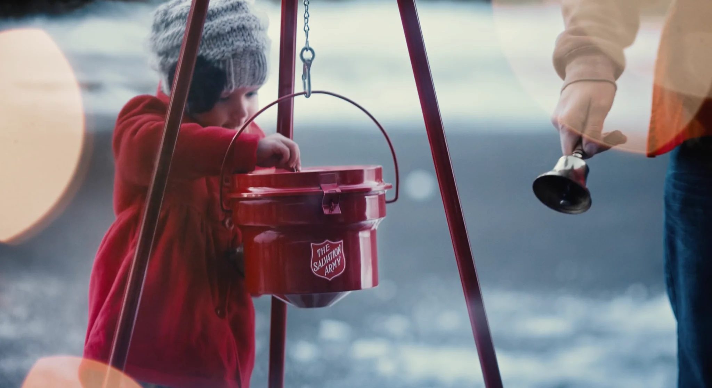

Film 01
05 · The Salvation Army
Christmas
A Christmas film campaign built around one of the most recognizable symbols of the season: the red kettle.

ClientThe Salvation Army
AgencyThe Richards Group
RoleConcept & Art Direction
DisciplinesFilm · Christmas Campaign
The work
Two Christmas films centered on the familiar red kettle and the people whose generosity gives it meaning.
Film 02